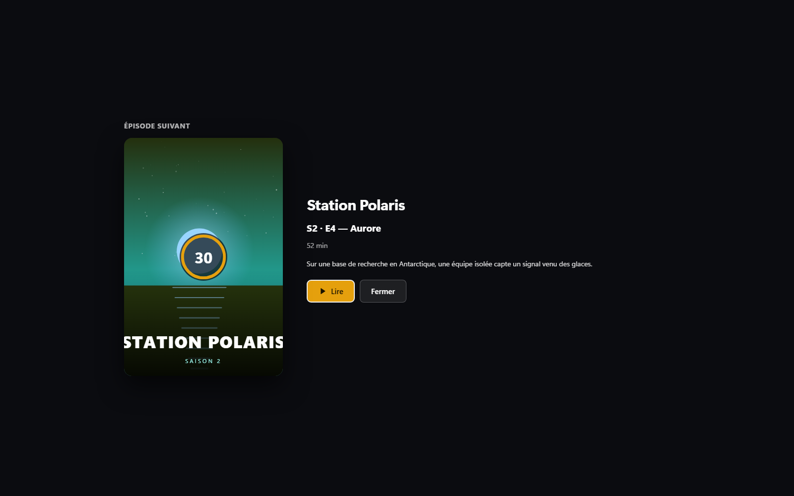
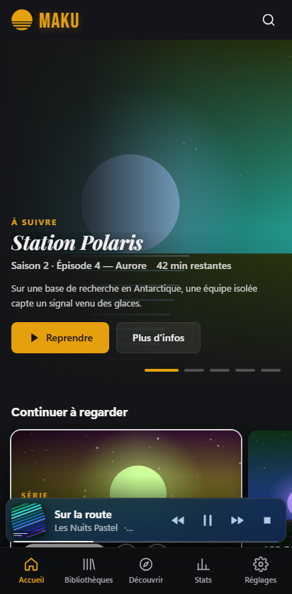

Accueil › Fonctionnalités › Le lecteur
Le lecteur
La vidéo d'origine, lue tout de suite.
Maku confie le fichier tel quel à un vrai lecteur vidéo, sur l'appareil qui vous sert d'écran. Pas d'attente le temps que le serveur convertisse, pas de perte de qualité : la 4K reste de la 4K, le HDR reste du HDR, et le son part tel qu'il a été mixé.

Lecture directe
Décodée par votre appareil, pas par le serveur
Sur ordinateur, c'est mpv, le lecteur libre réputé pour lire à peu près tout, qui affiche la vidéo. Sur téléphone, tablette et TV Android, c'est le lecteur natif d'Android, qui s'appuie sur la puce vidéo de l'appareil.
- 4K, HEVC, HDR : le fichier d'origine est lu tel quel, sans conversion.
- Qualité au choix : le fichier d'origine, ou une conversion par le serveur de 20 Mb/s en 1080p à 1,5 Mb/s en 480p, pour une connexion faible. Le choix est retenu pour les vidéos suivantes.
- Plusieurs versions d'un même film (4K, 1080p…) ? Vous choisissez sur sa fiche, avec ses propres pistes audio et sous-titres.
- Le serveur n'intervient qu'en dernier recours : d'abord pour le son seul, l'image restant intacte, puis pour le tout.

Des commandes qui s'effacent
Rien entre vous et le film
Les commandes flottent dans une capsule translucide en bas de l'image : titre, pistes audio et sous-titres en cours, progression, temps restant, ±10 s, épisode précédent et suivant, arrêt. Elles s'effacent après 4 secondes sans bouger la souris.
- Aperçu au survol de la barre de progression : la miniature de l'instant visé, quand le serveur a préparé les aperçus.
- Pistes audio et sous-titres (intégrés ou externes) à changer pendant la lecture.
- Votre langue, sans rien régler : Maku lit le son dans la langue de son interface, sans sous-titres. Réglages → Lecteur permet de changer la langue du son et les sous-titres (vraiment aucun, seulement quand le son est dans une autre langue, toujours dans une langue), ou de laisser le serveur choisir. Et le choix fait sur un film ou une série, dans le lecteur ou sur sa fiche, est retenu pour ce titre : il n'est plus à refaire à chaque reprise ni à chaque épisode.
- Barre minimaliste par défaut : une seule rangée sur un dégradé, sans cadre. La capsule complète reste au choix dans Réglages → Interface.
- Raccourcis clavier : espace, flèches, F pour le plein écran, M pour couper le son, et les touches multimédia du clavier. Le plein écran se quitte tout seul quand la vidéo se termine ou se ferme.
Les séries
Les épisodes s'enchaînent tout seuls
Pendant un épisode, Passer l'intro et Passer le générique apparaissent au bon moment, sur les repères détectés par votre serveur. Avec Plex, ces boutons sont là pour tous les comptes.
- Épisode suivant : à la fin d'un épisode, sa jaquette, son titre et son résumé, avec un compte à rebours réglable de 5 à 30 secondes (ou aucun).
- Reprise là où vous vous étiez arrêté, sur tous vos appareils, grâce à la progression enregistrée par le serveur. Si le serveur tarde à répondre, la lecture continue et ses commandes restent vives : la progression repart au prochain envoi.
- Un seul titre à la fois : arrêter une lecture ou en lancer une autre pendant que la première se prépare suffit, elle ne démarre pas ensuite dans votre dos.
- Continuer à regarder en tête de l'accueil, avec la scène et le temps restant.
- Bandes-annonces : celle du serveur d'abord, sinon celle de TMDB, dans votre langue quand elle existe.

Le son
Dolby, DTS et Atmos jusqu'à l'ampli
Sur Android et Android TV, le son Dolby, DTS ou Atmos part tel quel vers l'ampli ou la barre de son qui l'accepte. Les formats que l'appareil ne sait pas décoder (DTS, DTS-HD, TrueHD) le sont sur place, plutôt que de faire convertir tout le film par le serveur.
- La page Réglages → Lecteur montre les formats que votre sortie audio accepte.
- Décodé ici : pour un appareil qui annonce à tort un format qu'il ne lit pas, le son est décodé par l'appareil.
- Au démarrage de la TV, quand la liaison HDMI n'est pas encore établie, Maku se souvient des formats de votre ampli.
Une vidéo se fige ? Maku vous le dit.
Sur Android, quand l'image n'avance plus alors que la vidéo est chargée, Maku ne reste pas bloqué : un message propose de réessayer au même endroit, de passer 10 s, de décoder le son sur l'appareil ou de demander une conversion par le serveur, qui reprend au même endroit.
Si c'est le son envoyé tel quel qui fait caler votre TV, Maku passe de lui-même en « Décodé ici » et vous le signale.
Les anciennes vidéos DivX et Xvid sont décodées par Android lui-même plutôt que par la puce de la TV : sur certains téléviseurs, celle-ci épuisait la mémoire de l'appareil jusqu'à le figer.
Si la mémoire de l'appareil s'effondre quand même pendant une vidéo, Maku passe de lui-même à la conversion par le serveur, au même endroit, avant que l'appareil ne se fige. Un fichier que l'appareil n'a pas pu lire tel quel part ensuite directement en conversion ; dans le menu Qualité, « Lire le fichier d'origine » le relit tel quel.
Quand Maku passe en arrière-plan pendant un film (bouton Accueil, économiseur d'écran, TV mise en veille), la vidéo s'arrête là où elle en est et libère le décodeur de l'appareil. Au retour, elle est rouverte au même endroit, en pause.
Un journal de diagnostic garde la trace de chaque lecture, et, si Maku ne répond plus, ce qu'il était en train de faire. Il se partage depuis le téléphone, ou par QR code depuis la TV.
Hors ligne
Vos films dans le train, sans réseau
Sur téléphone et tablette Android, Télécharger garde un film, un épisode ou une saison entière sur l'appareil : dans le fichier d'origine avec toutes ses pistes, ou converti par le serveur en 1080p ou 720p, plus léger. Un album ou une playlist se télécharge aussi.
- La page Téléchargements les range par dossier : un par saison, par album ou par playlist, avec son avancement et sa place sur l'appareil. Un appui l'ouvre sur son contenu, « Tout supprimer » le vide d'un geste, après confirmation.
- Une coupure reprend là où elle s'était arrêtée, même si Maku a été fermé en plein téléchargement ; si le fichier a changé sur le serveur entre-temps, il est repris en entier plutôt que mélangé.
- La progression jouée hors ligne est renvoyée au serveur dès qu'il répond : à chaque retour dans Maku et à chaque retour du réseau, avec Plex comme avec Jellyfin et Emby.
- Le bouton n'apparaît que pour les comptes autorisés à télécharger par l'administrateur du serveur.
